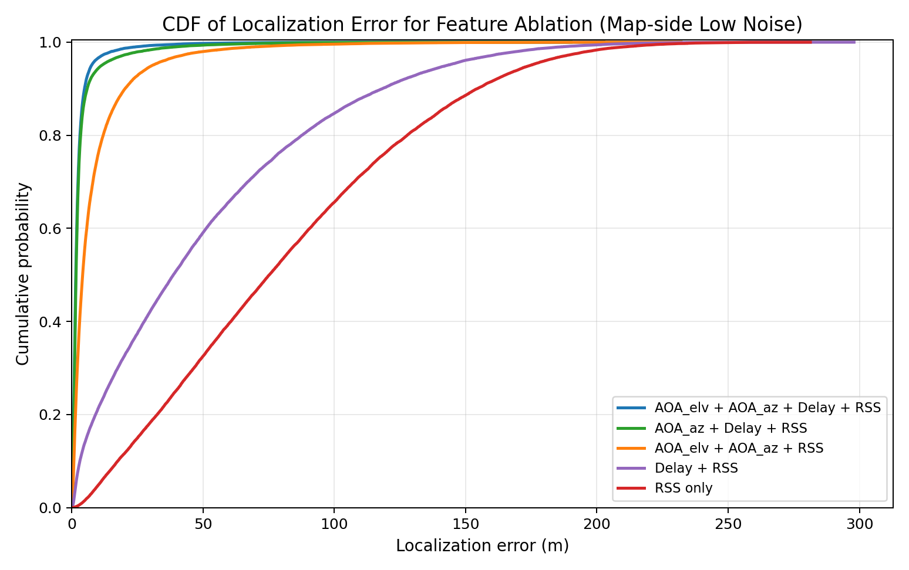
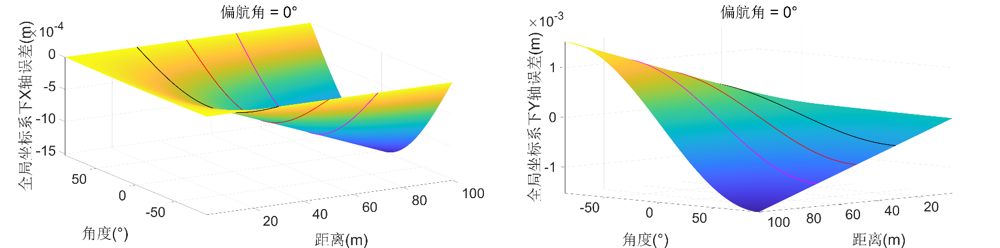

Small-Scale Radio Map-Based NLoS Localization
IEEE/CIC ICCC, 2026
基于射线追踪构建融合到达角、仰角、时延与接收信号强度的无线电地图，结合 KNN 特征匹配研究城市峡谷中的非视距定位。
查看特征消融实验图

IEEE/CIC ICCC, 2026
基于射线追踪构建融合到达角、仰角、时延与接收信号强度的无线电地图，结合 KNN 特征匹配研究城市峡谷中的非视距定位。

IEEE Transactions on Instrumentation and Measurement, Vol. 74, 2025
分析非线性坐标变换下的观测误差传播与累积机理，提出累积误差期望补偿方法 CEEC-CSM，并通过实测轨迹对比评估补偿效果。配图为论文 Fig. 15，展示场景 D 侧视观测下的雷达建图结果及卫星影像对照。

2025–至今
联合培养博士研究生 · 信息与通信工程
导师：承楠教授、杨婷婷教授
2022–2025
工学硕士 · 信息与通信工程
导师：李洋、王彦平
GPA 3.86/4.0；“大唐杯”省部级二等奖、“互联网+”校级一等奖。
2017–2021
工学学士 · 通信工程